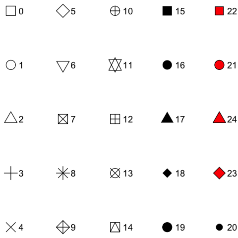

Common arguments
Arguments
- plot
A
tidyplotgenerated with the functiontidyplot().- data
The data to be displayed in this layer. There are three options:
If
all_rows()(the default) the complete dataset is displayed.A
functionto subset the plot data. Seefilter_rows()and friends.A
data.frameto override the plot data.
- dodge_width
For adjusting the distance between grouped objects. Defaults to
0.8for plots with at least one discrete axis and0for plots with two continuous axes.- preserve
Should dodging preserve the
"total"width of all elements at a position, or the width of a"single"element?- rasterize
If
FALSE(the default) the layer will be constructed of vector shapes. IfTRUEthe layer will be rasterized to a pixel image. This can be useful when plotting many individual objects (1,000 or more) compromises the performance of the generated PDF file.- rasterize_dpi
The resolution in dots per inch (dpi) used for rastering the layer if
rasterizeisTRUE. The default is300dpi.- shape
An
integerbetween0and24, representing the shape of the plot symbol.
- size
A
numberrepresenting the size of the plot symbol. Typical values range between1and3.- linewidth
Thickness of the line in points (pt). Typical values range between
0.25and1.- ...
Arguments passed on to the
geomfunction.- alpha
A
numberbetween0and1for the opacity of an object. A value of0is completely transparent,1is completely opaque.- color
A hex color for the stroke color. For example,
"#FFFFFF"for white.- fill
A hex color for the fill color. For example,
"#FFFFFF"for white.- saturation
A
numberbetween0and1for the color saturation of an object. A value of0is completely desaturated (white),1is the original color.- group
Variable in the dataset to be used for grouping.
- reverse
Whether the order should be reversed or not. Defaults to
FALSE, meaning not reversed.- .reverse
Whether the order should be reversed or not. Defaults to
FALSE, meaning not reversed.- scale_cut
Scale cut function to be applied. See
scales::cut_short_scale()and friends.- fontsize
Font size in points. Defaults to
7.- replace_na
Whether to replace
count = NAwithcount = 0.- width
Width of the plot area. Defaults to
50.- height
Height of the plot area. Defaults to
50.- unit
Unit of the plot area width and height. Defaults to
mm.- force_continuous
Whether to force the axis to be continuous. Defaults to
FALSE.